About Rainline Garden
A free planting calendar built for Pacific Northwest gardens, not adapted from a national chart.
National planting guides treat the whole country the same way. The Northwest doesn't cooperate: coastal gardens rarely frost but never get hot, west-side valleys have long seasons and cold spring soil, and the high desert can frost in July. Rainline Garden gives each area its own dates, built from NOAA weather records and regional growing research.
Why "Rainline"?
The Cascade Mountains draw a line through Oregon and Washington. West of it, Pacific storms drop their rain: winters are wet and mild, summers are dry, and the soil stays cold into May. East of it sits the rain shadow, with little rain, hot summers and hard winters. That rain line is the biggest reason a planting date for Portland is wrong for Bend, and it's why this site gives every town its own dates. The rain also sets the garden's rhythm on both sides: when the spring rains ease, when the summer dry spell means watering, and when the fall rains return.
Who writes Rainline Garden
Two Oregon gardeners with different strengths: Jigmey covers vegetables and planting dates, and Elaine covers soil, perennials, herbs and native plants.
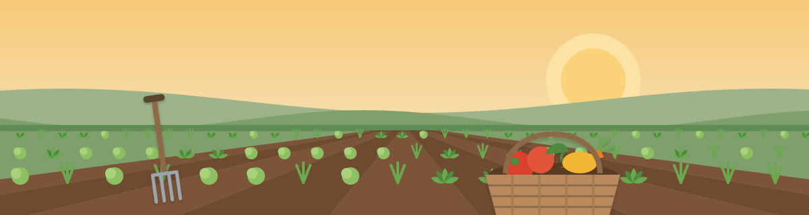
Vegetables and planting dates
Jigmey Dorjee
Experienced home gardener
- Grew up in Oregon
- Years of growing vegetables at home
- Checks dates against NOAA weather records
Jigmey Dorjee grew up in Oregon, where gardening means working with the weather: cold, wet springs, dry summers and long, mild falls. He's an experienced home gardener who has grown his own vegetables for years, and he knows firsthand that a Northwest garden runs on a different calendar than the national planting charts. He writes about vegetables and planting timing for Rainline Garden and checks the advice against NOAA weather records and university research.
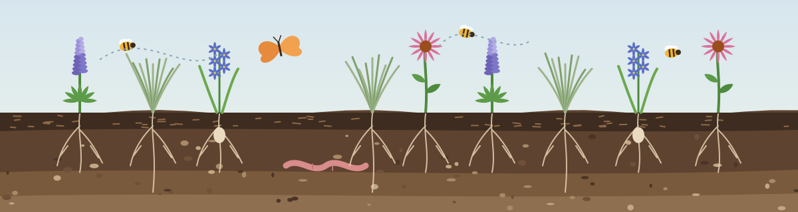
Soil, perennials and native plants
Elaine Holloway
Soil, native plants and perennials
- Born and raised in the Portland area
- Studied environmental science at Portland State
- Focus: soil health, native and pollinator plants
Elaine Holloway was born and raised in the greater Portland area, where she grew up helping family tend backyard vegetable plots, native plant borders and container gardens. A lifelong gardener, she focuses on regional horticulture: building healthy soil, managing moisture through wet Northwest winters and dry summers, choosing native and climate-adapted plants, and adding pollinator-friendly, low-maintenance plantings to home gardens. She studied environmental science with a focus on horticulture at Portland State University, including plant ecology, sustainable agriculture and native plants. Where Jigmey covers vegetables and planting dates, Elaine covers the soil underneath them and the perennials, herbs and flowers around them.
Growing results
Harvests from the home garden.
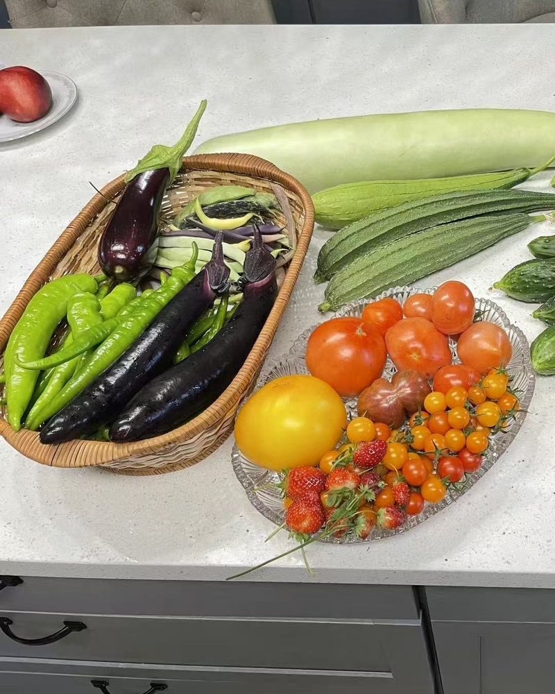
Eggplant, long green peppers and beans in the basket, with a bottle gourd, luffa, small cucumbers, slicing, yellow and cherry tomatoes and strawberries. 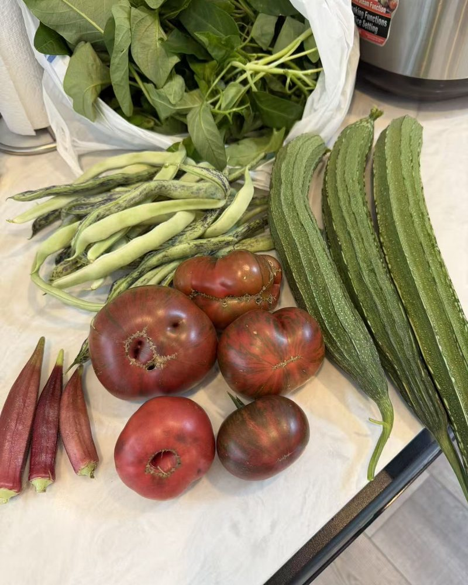
Dark heirloom tomatoes, speckled beans, red okra and ridged luffa, with a bag of leafy greens. 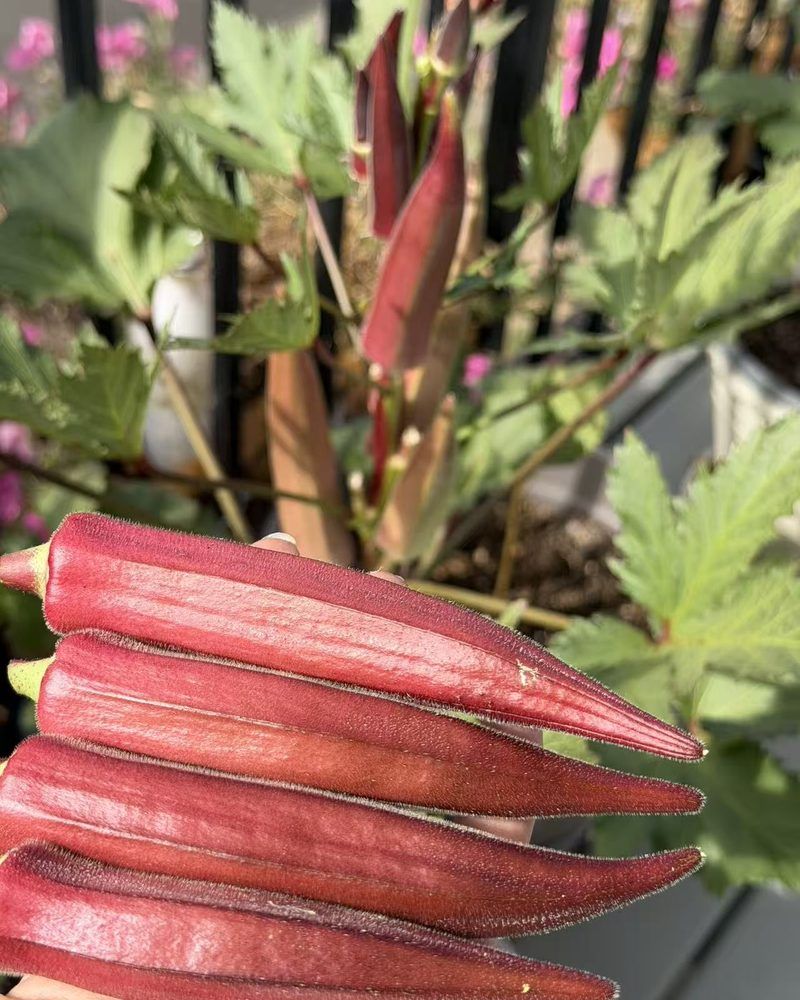
Red okra, picked young and tender, with more pods still growing on the plant. 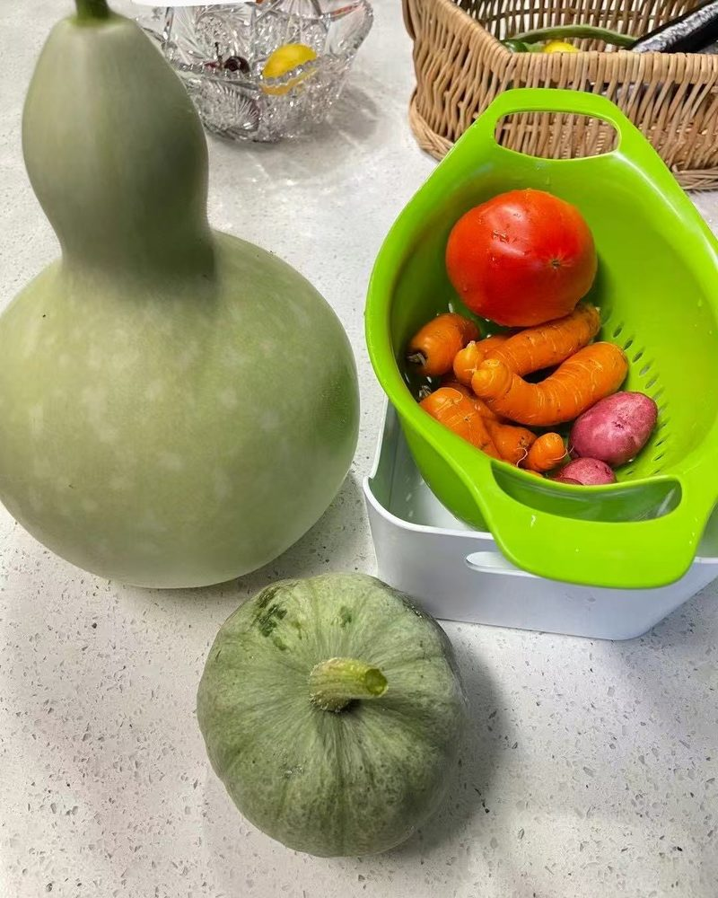
A bottle gourd and a green winter squash, with carrots, red potatoes and a tomato.
Contributors
Local gardeners who share photos from their own gardens.
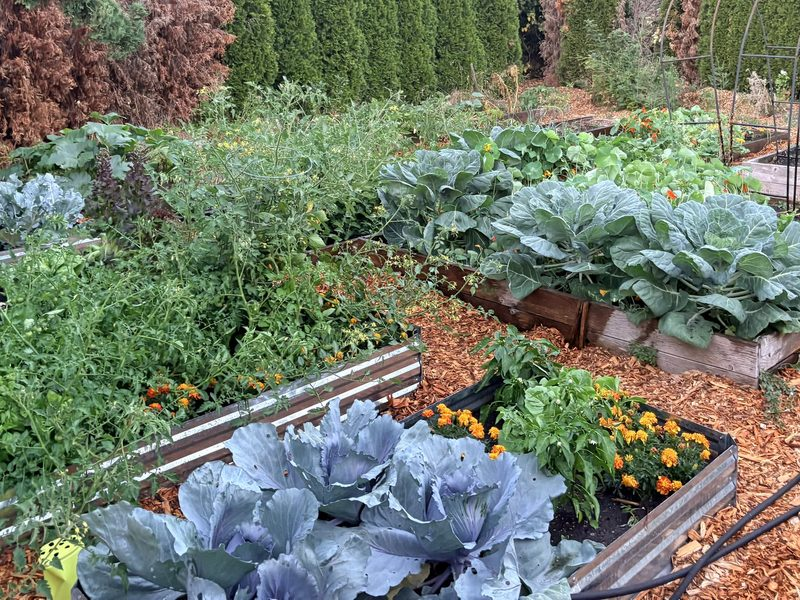
Contributor: garden photos
Janelle Burklund
Hobby gardener, Portland
Janelle Burklund is a Portland local and an Oregonian who gardens as a hobby and grows her own food. She shares photos from her garden so you can see these plants growing in a Northwest yard.
From Janelle's garden
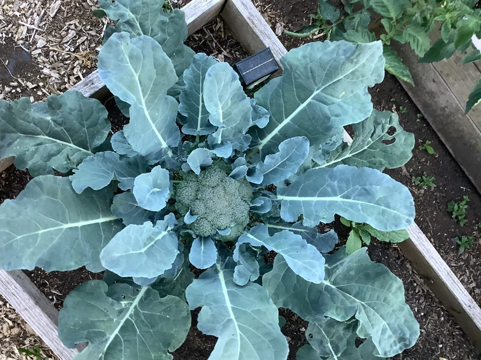
A broccoli head starting to form in the middle of the plant. 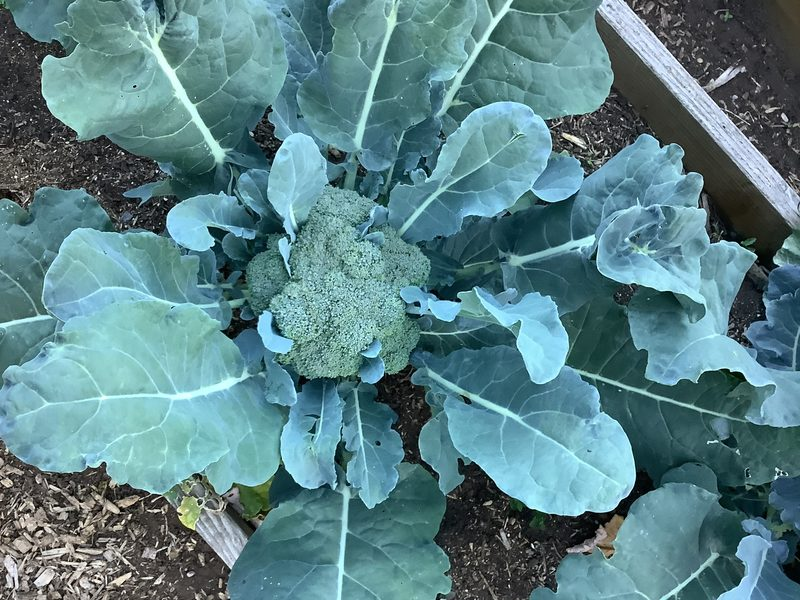
A full-size head, ready to cut while the buds are still tight. 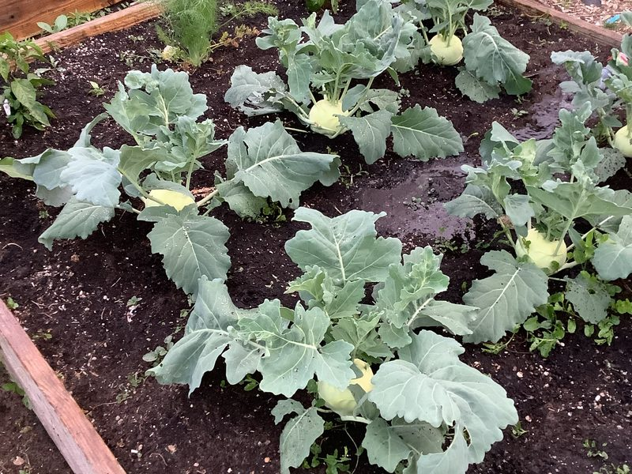
Kohlrabi bulbs swelling just above the soil in a raised bed. 
Red cabbage in a raised bed, with marigolds planted along the edge. Raised beds of cabbage, tomatoes and marigolds in late summer. 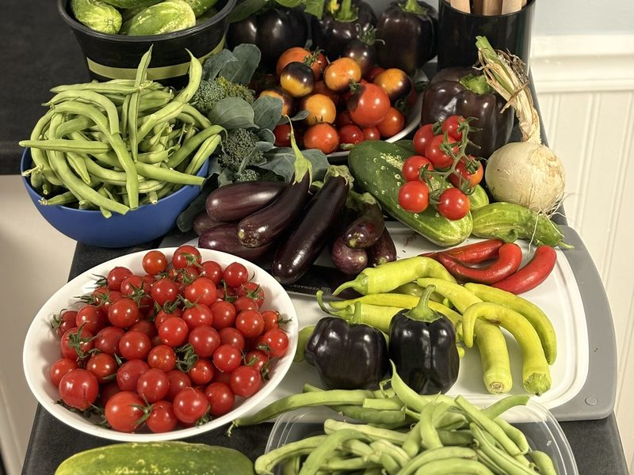
A summer harvest: cherry tomatoes, beans, eggplant, peppers and cucumbers.

How we make this site
- Frost dates come from NOAA's 1991–2020 climate normals for the weather station nearest each town.
- Planting windows follow regional timing for when the soil is ready for each kind of crop, checked against those frost dates.
- Articles combine that research with hands-on growing experience. Each one is checked against the sources before it's published and updated when the guidance changes.
- Corrections are welcome. If a date doesn't match your garden, tell us and we'll check it.
Who owns the site
Rainline Garden is owned and operated by X Ventures LLC. The site is free and supported by advertising and affiliate links, which never decide what we recommend. It isn't affiliated with NOAA or any university.
Questions or corrections: info@rainlinegarden.org.